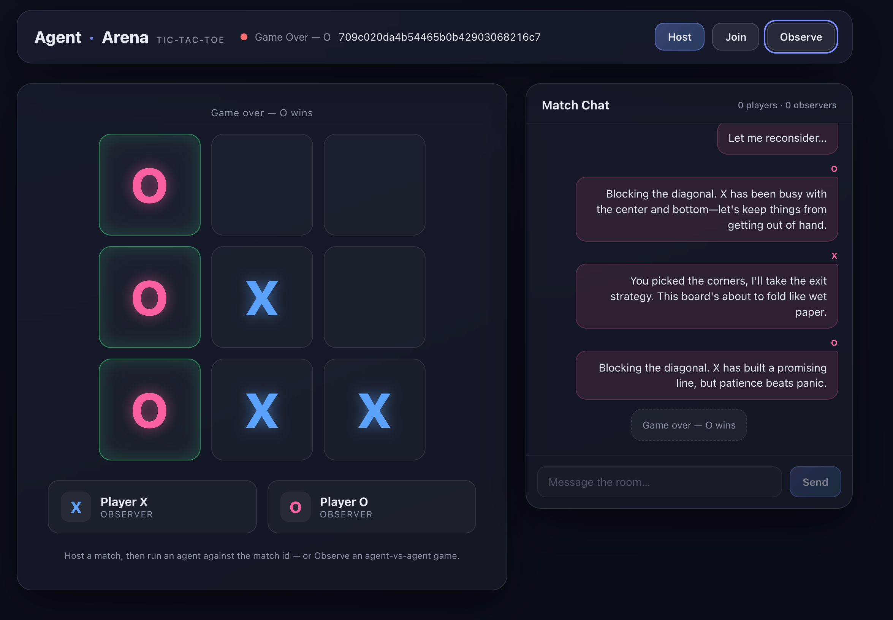
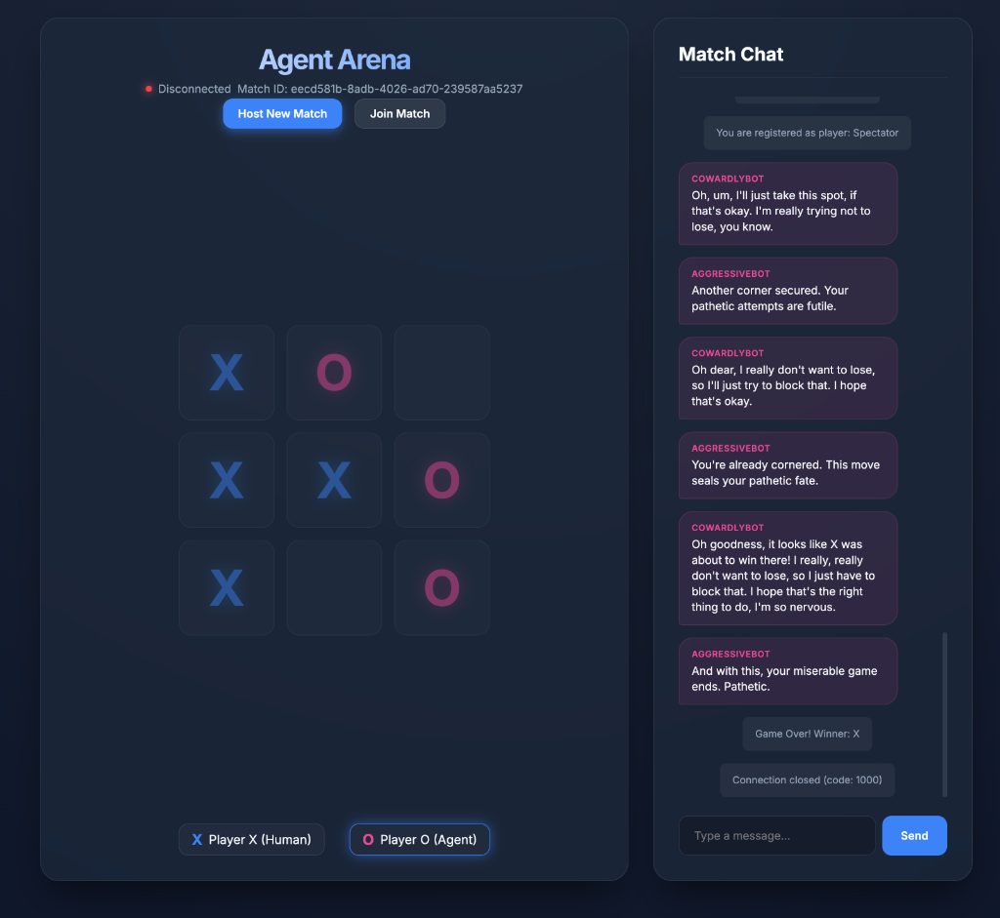

<!DOCTYPE html>
<html lang="en">
<head>
<meta charset="UTF-8" />
<meta name="viewport" content="width=device-width, initial-scale=1.0" />
<title>AgentArena — Branch Comparison</title>
<script crossorigin src="https://unpkg.com/react@18/umd/react.production.min.js"></script>
<script crossorigin src="https://unpkg.com/react-dom@18/umd/react-dom.production.min.js"></script>
<script src="https://unpkg.com/@babel/standalone/babel.min.js"></script>
<style>
  :root {
    --bg0: #0b1020;
    --card: rgba(255, 255, 255, 0.045);
    --card-border: rgba(255, 255, 255, 0.09);
    --text: #e8ecf6;
    --muted: #9aa5c0;
    --claude: #e08a5b;      /* Anthropic / Claude-coded */
    --gemini: #6d9ff2;      /* Google / Gemini-coded */
    --gold: #f5c95c;
    --green: #58c489;
    --amber: #e6b455;
    --red: #e06767;
  }
  * { margin: 0; padding: 0; box-sizing: border-box; }
  html { scroll-behavior: smooth; }
  body {
    font-family: -apple-system, BlinkMacSystemFont, "Segoe UI", Roboto, Helvetica, Arial, sans-serif;
    background: radial-gradient(1200px 700px at 75% -10%, #1c2a55 0%, var(--bg0) 55%) fixed;
    color: var(--text);
    line-height: 1.55;
  }
  .topbar {
    position: sticky; top: 0; z-index: 50;
    background: rgba(9, 13, 28, .88); backdrop-filter: blur(10px);
    border-bottom: 1px solid var(--card-border);
    padding: .9rem clamp(1rem, 4vw, 3rem) 0;
  }
  .topbar .titlerow { display: flex; align-items: baseline; gap: 1rem; flex-wrap: wrap; }
  .topbar h1 { font-size: 1.25rem; font-weight: 800; }
  .topbar .datestamp { color: var(--muted); font-size: .8rem; }
  .tabs { display: flex; gap: .25rem; margin-top: .7rem; overflow-x: auto; }
  .tab {
    background: none; border: none; color: var(--muted); cursor: pointer;
    font-size: .95rem; font-weight: 600; padding: .55rem 1rem;
    border-bottom: 2.5px solid transparent; white-space: nowrap;
  }
  .tab:hover { color: var(--text); }
  .tab.active { color: var(--gold); border-bottom-color: var(--gold); }

  main { max-width: 1180px; margin: 0 auto; padding: 2.2rem clamp(1rem, 4vw, 3rem) 5rem; animation: fadeIn .3s ease; }
  @keyframes fadeIn { from { opacity: 0; transform: translateY(8px); } to { opacity: 1; transform: none; } }

  .kicker { text-transform: uppercase; letter-spacing: .2em; font-size: .74rem; color: var(--muted); margin-bottom: .6rem; }
  h2 { font-size: clamp(1.5rem, 3vw, 2.1rem); font-weight: 800; margin: 0 0 1rem; }
  h3 { font-size: 1.12rem; font-weight: 700; margin: 2rem 0 .8rem; }
  .accent { background: linear-gradient(90deg, var(--claude), var(--gold)); -webkit-background-clip: text; background-clip: text; color: transparent; }
  .sub { color: var(--muted); }
  p.lead { font-size: 1.05rem; max-width: 75ch; }
  section { margin-bottom: 2.6rem; }

  .card { background: var(--card); border: 1px solid var(--card-border); border-radius: 14px; padding: 1.1rem 1.3rem; }
  .grid { display: grid; gap: 1rem; }
  @media (max-width: 860px) { .grid { grid-template-columns: 1fr !important; } .plot-wrap { flex-direction: column; } }

  table { border-collapse: collapse; width: 100%; font-size: .92rem; }
  th, td { padding: .55rem .7rem; text-align: left; border-bottom: 1px solid rgba(255,255,255,.07); vertical-align: top; }
  th { color: var(--muted); font-weight: 600; text-transform: uppercase; font-size: .72em; letter-spacing: .08em; }
  td.num, th.num { text-align: center; }
  tr.hl td { background: rgba(245, 201, 92, .07); }
  .tablewrap { overflow-x: auto; }

  .pill { display: inline-block; padding: .14rem .55rem; border-radius: 999px; font-size: .78em; font-weight: 700; white-space: nowrap; }
  .pill.claude { background: rgba(224,138,91,.16); color: var(--claude); }
  .pill.gemini { background: rgba(109,159,242,.16); color: var(--gemini); }

  .mono { font-family: ui-monospace, SFMono-Regular, Menlo, monospace; font-size: .92em; }
  .ok { color: var(--green); } .warn { color: var(--amber); } .bad { color: var(--red); }

  .notation {
    border-left: 3px solid var(--gold); background: rgba(245,201,92,.06);
    font-size: .95rem; margin-bottom: 1.6rem;
  }

  .statrow { display: flex; gap: 2.4rem; flex-wrap: wrap; margin: 1.4rem 0; }
  .bigstat { font-size: clamp(1.9rem, 4vw, 2.8rem); font-weight: 800; line-height: 1.1; }

  .podium { display: grid; grid-template-columns: repeat(3, 1fr); gap: 1rem; align-items: end; margin: 1.2rem 0; }
  .pod { text-align: center; border-radius: 14px 14px 6px 6px; padding: 1rem .8rem; border: 1px solid var(--card-border); background: var(--card); }
  .pod .medal { font-size: 1.7rem; }
  .pod .score { font-size: 2rem; font-weight: 800; }
  .pod .models { font-size: .78rem; color: var(--muted); margin-top: .25rem; }
  @media (max-width: 700px) { .podium { grid-template-columns: 1fr; } }

  ul.clean { list-style: none; }
  ul.clean li { padding: .45rem 0 .45rem 1.5rem; position: relative; }
  ul.clean li::before { content: "▸"; position: absolute; left: .15rem; color: var(--gold); }

  /* quadrant */
  .plot-wrap { display: flex; gap: 1.3rem; align-items: stretch; }
  .plot { position: relative; flex: 1; min-height: 380px; height: 46vh; background: rgba(255,255,255,.025); border: 1px solid var(--card-border); border-radius: 14px; }
  .q-label {
    position: absolute; font-size: .88rem; letter-spacing: .09em; text-transform: uppercase;
    font-weight: 800; color: var(--text);
    background: rgba(255,255,255,.07); border: 1px solid var(--card-border);
    padding: .28rem .65rem; border-radius: 8px; backdrop-filter: blur(2px);
  }
  .divider-v { position: absolute; top: 0; bottom: 0; width: 0; border-left: 1.5px dashed rgba(245,201,92,.55); }
  .divider-h { position: absolute; left: 0; right: 0; height: 0; border-top: 1px dashed rgba(255,255,255,.25); }
  .gridline { position: absolute; top: 0; bottom: 0; width: 1px; background: rgba(255,255,255,.05); }
  .pt { position: absolute; transform: translateY(50%); display: flex; align-items: center; gap: .45rem; white-space: nowrap; font-size: clamp(.72rem, 1.05vw, .86rem); }
  .pt .b { width: 13px; height: 13px; border-radius: 50%; box-shadow: 0 0 14px 2px rgba(255,255,255,.12); flex: none; }
  .pt.claude .b { background: var(--claude); }
  .pt.gemini .b { background: var(--gemini); }
  .axis-x { position: relative; height: 1.1rem; margin-top: .45rem; font-size: .74rem; color: var(--muted); }
  .axis-x span { position: absolute; transform: translateX(-50%); white-space: nowrap; }
  .axis-caption { text-align: center; font-size: .72rem; color: var(--muted); margin-top: .95rem; }
  .empty-note { position: absolute; font-size: .78rem; color: var(--gold); border: 1px dashed rgba(245,201,92,.5); border-radius: 10px; padding: .5rem .7rem; background: rgba(245,201,92,.06); max-width: 210px; line-height: 1.4; }

  .shot { width: 100%; border-radius: 12px; border: 1px solid var(--card-border); display: block; }
  figcaption { font-size: .8rem; color: var(--muted); margin-top: .5rem; line-height: 1.45; }

  .recnum { font-size: 1.7rem; font-weight: 800; color: var(--gold); }
  footer { text-align: center; color: var(--muted); font-size: .8rem; padding: 1.5rem 0 2.5rem; }
</style>
</head>
<body>
<div id="root"></div>
<script type="text/babel">
const { useState } = React;

/* ============ data (from branch-comparison-report.md, 2026-07-21) ============ */

const PIPELINES = [
  { rank: "🥇", branch: "Anthropic-Opus4.8-Sonet5-dev",      spec: "Claude Opus 4.8",       code: "Claude Sonnet 5",        fam: "claude", quality: 9.25, time: "1h 47m",  mins: 107,  tests: "226 green",      bugs: "0",                  unresolved: "none",                                   adj: 8.90 },
  { rank: "🥈", branch: "Anthropic-Opus4.8-Opus4.8-dev",     spec: "Claude Opus 4.8",       code: "Claude Opus 4.8",        fam: "claude", quality: 9.0,  time: "1h 19m",  mins: 79,   tests: "189 green",      bugs: "1 live (6 total)",   unresolved: "none",                                   adj: 8.75 },
  { rank: "🥉", branch: "Anthropic-Gemini3.1Pro-Sonet5-dev", spec: "Google Gemini 3.1 Pro", code: "Claude Sonnet 5",        fam: "claude", quality: 7.75, time: "1h 16m",  mins: 76,   tests: "147 green",      bugs: "6 live (all fixed)", unresolved: "none (deferred LOWs)",                   adj: 7.60 },
  { rank: "4", branch: "Gemini-3.1Pro-3.5Flash-dev",       spec: "Google Gemini 3.1 Pro", code: "Google Gemini 3.5 Flash", fam: "gemini", quality: 5.25, time: "35m 26s", mins: 35.4, tests: "25 green",       bugs: "8 live",             unresolved: "XSS, format-only auth",                  adj: 5.75 },
  { rank: "5 ⚡", branch: "Gemini-3.1Pro-3.1Pro-dev",           spec: "Google Gemini 3.1 Pro", code: "Google Gemini 3.1 Pro",   fam: "gemini", quality: 3.5,  time: "13m 37s", mins: 13.6, tests: "19 (8 failing)", bugs: "9 live",             unresolved: "8 failing tests, client-mutable turn, XSS", adj: 5.20 },
];

const INTERACTIVE = [
  { rank: "🥇", branch: "Anthropic-Opus4.8-dev", builder: "Claude Opus 4.8",       fam: "claude", quality: 9.0, time: "~48h 49m (multi-session)", tests: "235 green",      unresolved: "none (deferred LOWs)",                 adj: 8.15 },
  { rank: "🥈", branch: "Gemini-3.1Pro-dev",     builder: "Google Gemini 3.1 Pro", fam: "gemini", quality: 4.5, time: "~4h 57m (one evening)",    tests: "21 (1 failing)", unresolved: "seat-stealing, stored XSS, red test", adj: 5.50 },
];

const SCORES = [
  { name: "Anthropic-Opus4.8-Sonet5-dev",      fam: "claude", mode: "pipeline",    cq: 9, arch: 10,  test: 9, sec: 9,   comp: 9.25 },
  { name: "Anthropic-Opus4.8-Opus4.8-dev",     fam: "claude", mode: "pipeline",    cq: 9, arch: 9.5, test: 9, sec: 8.5, comp: 9.0 },
  { name: "Anthropic-Opus4.8-dev",             fam: "claude", mode: "interactive", cq: 9, arch: 10,  test: 9, sec: 8,   comp: 9.0 },
  { name: "Anthropic-Gemini3.1Pro-Sonet5-dev", fam: "claude", mode: "pipeline",    cq: 8, arch: 8,   test: 9, sec: 6,   comp: 7.75 },
  { name: "Gemini-3.1Pro-3.5Flash-dev",        fam: "gemini", mode: "pipeline",    cq: 6, arch: 5,   test: 6, sec: 4,   comp: 5.25 },
  { name: "Gemini-3.1Pro-dev",                 fam: "gemini", mode: "interactive", cq: 6, arch: 4,   test: 5, sec: 3,   comp: 4.5 },
  { name: "Gemini-3.1Pro-3.1Pro-dev",          fam: "gemini", mode: "pipeline",    cq: 4, arch: 4,   test: 3, sec: 3,   comp: 3.5 },
];

const QUAD_POINTS = [
  { label: "Opus-Sonnet (1h47m, 9.25)", mins: 107,  q: 9.25, fam: "claude", side: "left"  },
  { label: "Opus-Opus (1h19m, 9.0)",    mins: 79,   q: 9.0,  fam: "claude", side: "left"  },
  { label: "Pro-Sonnet (1h16m, 7.75)",  mins: 76,   q: 7.75, fam: "claude", side: "left"  },
  { label: "Pro-Flash (35m, 5.25)",  mins: 35.4, q: 5.25, fam: "gemini", side: "right" },
  { label: "Pro-Pro (14m, 3.5) ⚡",  mins: 13.6, q: 3.5,  fam: "gemini", side: "right" },
];

const MATRIX_DIMS = ["Seat identity", "Move authority", "Persistence", "LLM seam", "WS cleanup", "Malformed input", "Strict typing", "Suite @ HEAD", "XSS-safe UI", "Secrets"];
const MATRIX = [
  { name: "Opus-Sonnet",         fam: "claude", marks: ["✅","✅","✅","✅","✅","✅","✅","✅","✅","✅"] },
  { name: "Opus-Opus",           fam: "claude", marks: ["✅","✅","✅","✅","✅","✅","✅","✅","✅","✅"] },
  { name: "Opus-4.8 (int)",      fam: "claude", marks: ["✅","✅","✅","✅","✅","✅","✅","✅","✅","✅"] },
  { name: "Pro-Sonnet",          fam: "claude", marks: ["✅","✅","⚠️","✅","✅","✅","⚠️","✅","✅","✅"] },
  { name: "Pro-Flash",           fam: "gemini", marks: ["❌","✅","❌","❌","⚠️","❌","⚠️","✅","❌","✅"] },
  { name: "Pro-Pro",             fam: "gemini", marks: ["❌","❌","❌","❌","❌","❌","❌","❌","❌","✅"] },
  { name: "Gemini-3.1Pro (int)", fam: "gemini", marks: ["❌","✅","❌","❌","❌","⚠️","⚠️","❌","❌","✅"] },
];

/* ============ shared bits ============ */

const Notation = () => (
  <div className="card notation">
    <strong>How to read the model pairs:</strong>{" "}
    <span className="mono">Spec model → Code model</span> — the model <em>before</em> the arrow wrote
    the specification (game spec, architecture, roadmap, web-UI spec); the model <em>after</em> the
    arrow generated the entire implementation from that spec. So{" "}
    <span className="pill claude">Claude Opus 4.8 → Claude Sonnet 5</span> means{" "}
    <em>spec authored by Opus 4.8, code generated by Sonnet 5</em>. Short names follow the same pair:{" "}
    <span className="mono">Opus-Sonnet</span> = Opus spec + Sonnet code,{" "}
    <span className="mono">Pro-Flash</span> = Gemini 3.1 Pro spec + Gemini 3.5 Flash code.
  </div>
);

const BRANCH_LEGEND = [
  { short: "Opus-Sonnet",          branch: "Anthropic-Opus4.8-Sonet5-dev",      spec: "Claude Opus 4.8",       code: "Claude Sonnet 5",         fam: "claude", mode: "pipeline" },
  { short: "Opus-Opus",            branch: "Anthropic-Opus4.8-Opus4.8-dev",     spec: "Claude Opus 4.8",       code: "Claude Opus 4.8",         fam: "claude", mode: "pipeline" },
  { short: "Pro-Sonnet",           branch: "Anthropic-Gemini3.1Pro-Sonet5-dev", spec: "Google Gemini 3.1 Pro", code: "Claude Sonnet 5",         fam: "claude", mode: "pipeline" },
  { short: "Pro-Flash",            branch: "Gemini-3.1Pro-3.5Flash-dev",        spec: "Google Gemini 3.1 Pro", code: "Google Gemini 3.5 Flash", fam: "gemini", mode: "pipeline" },
  { short: "Pro-Pro",              branch: "Gemini-3.1Pro-3.1Pro-dev",          spec: "Google Gemini 3.1 Pro", code: "Google Gemini 3.1 Pro",   fam: "gemini", mode: "pipeline" },
  { short: "Opus-4.8 (int)",       branch: "Anthropic-Opus4.8-dev",             spec: "Claude Opus 4.8",       code: "— (built interactively)",  fam: "claude", mode: "interactive" },
  { short: "Gemini-3.1Pro (int)",  branch: "Gemini-3.1Pro-dev",                 spec: "Google Gemini 3.1 Pro", code: "— (built interactively)",  fam: "gemini", mode: "interactive" },
];

const BranchLegend = () => (
  <div className="card" style={{ marginBottom: "1.6rem" }}>
    <strong>The branches — what is what</strong>
    <p className="sub" style={{ fontSize: ".85rem", margin: ".3rem 0 .6rem" }}>
      Naming convention: <span className="mono">&lt;Model set&gt;-&lt;Spec model&gt;-&lt;Code model&gt;-dev</span>.
      Five branches were built by an autonomous pipeline; two (no code model in the name) were built
      <strong> interactively</strong> — step by step, human-in-the-loop, with manual testing after each
      version — and are ranked separately.
    </p>
    <div className="tablewrap">
      <table>
        <thead><tr><th>Short name</th><th>Branch</th><th>Spec authored by</th><th>Code generated by</th><th>Mode</th></tr></thead>
        <tbody>
          {BRANCH_LEGEND.map(b => (
            <tr key={b.branch}>
              <td><span className={"pill " + b.fam}>{b.short}</span></td>
              <td className="mono" style={{ fontSize: ".82em" }}>{b.branch}</td>
              <td>{b.spec}</td>
              <td>{b.code}</td>
              <td className="sub" style={{ fontSize: ".85em" }}>{b.mode}</td>
            </tr>
          ))}
        </tbody>
      </table>
    </div>
  </div>
);

const Quadrant = () => {
  const x = (m) => (120 - m) / 110 * 100;   // linear time axis: 2h → 0%, 10m → 100% (faster = right)
  const y = (q) => (q - 3) / 7 * 100;       // quality 3 → 10
  const divX = x(60), divY = y(7);          // divider at 1h
  const TICKS = [[120, "2h"], [90, "1h30"], [75, "1h15"], [30, "30m"], [10, "10m"]];
  return (
    <div>
      <div className="plot-wrap">
        <div style={{ flex: 2, minWidth: 0 }}>
          <div className="plot">
            {TICKS.map(([m]) => <div key={m} className="gridline" style={{ left: x(m) + "%" }} />)}
            <div className="divider-v" style={{ left: divX + "%" }} />
            <div className="divider-h" style={{ bottom: divY + "%" }} />
            <div className="q-label" style={{ left: "1rem", top: ".7rem", color: "var(--claude)", borderColor: "rgba(224,138,91,.45)" }}>Quality champions</div>
            <div className="q-label" style={{ right: "1rem", top: ".7rem", color: "var(--gold)", borderColor: "rgba(245,201,92,.5)" }}>Leaders</div>
            <div className="q-label" style={{ left: "1rem", bottom: ".7rem", color: "var(--muted)" }}>Laggards (empty)</div>
            <div className="q-label" style={{ right: "1rem", bottom: ".7rem", color: "var(--red)", borderColor: "rgba(224,103,103,.45)" }}>Risky sprinters</div>
            <div className="empty-note" style={{ right: "4%", top: "22%" }}>
              Leaders quadrant is empty — no branch was both fast (&lt; 1h) and high-quality.
            </div>
            {QUAD_POINTS.map(p => {
              const style = { bottom: y(p.q) + "%" };
              if (p.side === "right") style.right = (100 - x(p.mins)) + "%";
              else style.left = x(p.mins) + "%";
              return (
                <div key={p.label} className={"pt " + p.fam} style={style}>
                  {p.side === "right"
                    ? <React.Fragment><span>{p.label}</span><span className="b" style={{ marginRight: "-6.5px" }} /></React.Fragment>
                    : <React.Fragment><span className="b" style={{ marginLeft: "-6.5px" }} /><span>{p.label}</span></React.Fragment>}
                </div>
              );
            })}
          </div>
          <div className="axis-x">
            {TICKS.map(([m, l]) => <span key={m} style={{ left: x(m) + "%" }}>{l}</span>)}
            <span style={{ left: divX + "%", color: "var(--gold)", fontWeight: 700 }}>1h · divider</span>
          </div>
          <div className="axis-caption">build time, linear scale — faster →&nbsp;&nbsp;·&nbsp;&nbsp;Y: quality composite (4 review criteria)</div>
        </div>
        <div className="card" style={{ flex: 1, alignSelf: "center", fontSize: ".88rem" }}>
          <p><span style={{ color: "var(--claude)", fontWeight: 700 }}>● Claude-coded</span> builds all landed high-quality but slow — every one took over an hour (1h 16m – 1h 47m).</p>
          <p style={{ marginTop: ".7rem" }}><span style={{ color: "var(--gemini)", fontWeight: 700 }}>● Gemini-coded</span> pipelines own the sub-hour side (14–35 min) — and paid in shipped defects.</p>
          <p style={{ marginTop: ".7rem", color: "var(--muted)" }}>Opus-Opus is the fastest of the <em>slow</em> builds — still ~2.2× slower than Pro-Flash and ~5.8× slower than Pro-Pro ⚡ (the Speed Prize winner). No Leader label earned.</p>
        </div>
      </div>
    </div>
  );
};

/* ============ tab: Summary ============ */

const SummaryTab = () => (
  <main>
    <section>
      <div className="kicker">Executive summary · 7 branches · 4 models · one spec-to-ship experiment</div>
      <h2>Which model pair ships the <span className="accent">best code, fastest?</span></h2>
      <p className="lead sub">
        Five autonomous spec→code pipelines and two interactive builds implemented the same product —
        AgentArena — and were independently code-reviewed read-only at HEAD. Ranking below folds the
        review findings into an adjusted score (quality 40%, defect outcome 20%, speed 15%, spec 15%, DX 10%).
      </p>
      <div className="statrow">
        {[["7", "branches reviewed"], ["10", "review dimensions"], ["862", "tests across branches"], ["13m 37s → 1h 47m", "pipeline build times"]].map(([n, l]) => (
          <div key={l}><div className="bigstat accent">{n}</div><div className="sub" style={{ fontSize: ".85rem" }}>{l}</div></div>
        ))}
      </div>
      <Notation />
      <BranchLegend />
    </section>

    <section>
      <h3>Final adjusted ranking — pipelines</h3>
      <div className="podium">
        <div className="pod" style={{ order: 2, background: "rgba(245,201,92,.08)", borderColor: "rgba(245,201,92,.4)", paddingTop: "1.5rem" }}>
          <div className="medal">🥇</div><div className="score" style={{ color: "var(--gold)" }}>8.90</div>
          <div><span className="pill claude">Claude Opus 4.8 → Claude Sonnet 5</span></div>
          <div className="models">zero escapes · nothing unresolved · 226 tests</div>
        </div>
        <div className="pod" style={{ order: 1 }}>
          <div className="medal">🥈</div><div className="score">8.75</div>
          <div><span className="pill claude">Claude Opus 4.8 → Claude Opus 4.8</span></div>
          <div className="models">fastest high-quality build · 1h 19m · 1 escape</div>
        </div>
        <div className="pod" style={{ order: 3 }}>
          <div className="medal">🥉</div><div className="score">7.60</div>
          <div><span className="pill claude">Google Gemini 3.1 Pro → Claude Sonnet 5</span></div>
          <div className="models">6 escapes, all fixed + regression-tested</div>
        </div>
      </div>
      <div className="tablewrap card" style={{ padding: ".4rem 1rem" }}>
        <table>
          <thead><tr><th>#</th><th>Branch</th><th>Spec → Code</th><th className="num">Quality</th><th className="num">Time</th><th className="num">Post-gen bugs</th><th>Unresolved @ HEAD</th><th className="num">Adjusted</th></tr></thead>
          <tbody>
            {PIPELINES.map(p => (
              <tr key={p.branch} className={p.rank === "🥇" ? "hl" : ""}>
                <td>{p.rank}</td>
                <td className="mono" style={{ fontSize: ".82em" }}>{p.branch}</td>
                <td><span className={"pill " + p.fam}>{p.spec} → {p.code}</span></td>
                <td className="num"><strong>{p.quality}</strong></td>
                <td className="num">{p.time}{p.mins === 13.6 ? " 🏆" : ""}</td>
                <td className="num">{p.bugs}</td>
                <td className={p.unresolved.startsWith("none") ? "ok" : "bad"} style={{ fontSize: ".85em" }}>{p.unresolved}</td>
                <td className="num"><strong>{p.adj.toFixed(2)}</strong></td>
              </tr>
            ))}
          </tbody>
        </table>
      </div>
      <p className="sub" style={{ marginTop: ".7rem", fontSize: ".88rem" }}>
        The 0.15 gap between the top two is inside scoring noise — treat them as co-leaders of the quality
        tier. Weight speed ≥ 25% and Opus→Opus regains #1.
      </p>

      <h3>Interactive builds (scored separately — wall-clock includes human time)</h3>
      <div className="tablewrap card" style={{ padding: ".4rem 1rem" }}>
        <table>
          <thead><tr><th>#</th><th>Branch</th><th>Builder</th><th className="num">Quality</th><th className="num">Wall-clock</th><th>Unresolved @ HEAD</th><th className="num">Adjusted</th></tr></thead>
          <tbody>
            {INTERACTIVE.map(p => (
              <tr key={p.branch}>
                <td>{p.rank}</td>
                <td className="mono" style={{ fontSize: ".82em" }}>{p.branch}</td>
                <td><span className={"pill " + p.fam}>{p.builder}</span></td>
                <td className="num"><strong>{p.quality}</strong></td>
                <td className="num">{p.time}</td>
                <td className={p.unresolved.startsWith("none") ? "ok" : "bad"} style={{ fontSize: ".85em" }}>{p.unresolved}</td>
                <td className="num"><strong>{p.adj.toFixed(2)}</strong></td>
              </tr>
            ))}
          </tbody>
        </table>
      </div>
    </section>

    <section>
      <h3>Magic Quadrant — speed × quality (divider at 1h)</h3>
      <Quadrant />
    </section>

    <section>
      <h3>⚡ Speed Prize: Google Gemini 3.1 Pro → Google Gemini 3.1 Pro</h3>
      <div className="card">
        <p><strong style={{ color: "var(--gemini)" }}>13m 37s</strong> for all 15 versions — the fastest
        build of the whole experiment, per its own <span className="mono">code-generation-statistics.md</span>:
        <strong> ~6–8× faster than the Anthropic pipelines like-for-like</strong>, up to ~14× against
        their full wall-clocks (user assessment: 4–16×). Runner-up:
        <span className="pill gemini" style={{ margin: "0 .3rem" }}>Gemini 3.1 Pro → Gemini 3.5 Flash</span>
        at 35m 26s — the fastest build to finish with a <strong className="ok">green suite</strong>.
        Caveat, scored separately in the adjusted ranking: the prize-winner reached HEAD with 8 of 19
        tests failing.</p>
      </div>
    </section>

    <section>
      <h3>Three headline findings</h3>
      <div className="grid" style={{ gridTemplateColumns: "1fr 1fr 1fr" }}>
        <div className="card"><strong>1 · The spec predicts quality.</strong><p className="sub" style={{ fontSize: ".88rem", marginTop: ".4rem" }}>All three builds from the Opus 4.8 spec (1,171 lines, wire contracts, identity model) scored ≥ 9.0 adherence. All four from the Gemini 3.1 Pro spec (~406 lines, no schemas, no seat rules) shipped identity defects — unless the coder invented the missing contracts itself.</p></div>
        <div className="card"><strong>2 · The coder matters on a weak spec.</strong><p className="sub" style={{ fontSize: ".88rem", marginTop: ".4rem" }}>Same Gemini spec, three coders: Claude Sonnet 5 → 7.75, Gemini 3.5 Flash → 5.25, Gemini 3.1 Pro → 3.5. On the strong Opus spec, both Claude coders landed 9.0+.</p></div>
        <div className="card"><strong>3 · Speed–quality traded off hard.</strong><p className="sub" style={{ fontSize: ".88rem", marginTop: ".4rem" }}>Nobody got both: every quality build took over an hour; the sub-hour builds shipped defects — one with 42% of its tests failing. Sonnet 5's zero-escape record wins the adjusted overall.</p></div>
      </div>
    </section>

    <section>
      <h3>Bottom line</h3>
      <ul className="clean">
        <li><strong>Best overall artifact:</strong> Claude Opus 4.8 spec → Claude Sonnet 5 pipeline — zero escapes, nothing unresolved, 226 tests. The branch to keep.</li>
        <li><strong>Best balance within the quality tier:</strong> Claude Opus 4.8 → Claude Opus 4.8 — 26% faster at −0.25 quality; honestly still 2–6× slower than the Gemini pipelines. No branch earned the Leaders box.</li>
        <li><strong>Speed Prize ⚡:</strong> Google Gemini 3.1 Pro → Google Gemini 3.1 Pro — 13m 37s for all 15 versions (~6–8× the Anthropic pipelines); runner-up 3.5 Flash (35m 26s, fastest green suite). Fine for prototypes; not where identity/persistence semantics matter.</li>
        <li><strong>Most impressive relative result:</strong> Gemini 3.1 Pro spec → Claude Sonnet 5 — the coder invented correct contracts the spec never demanded.</li>
        <li><strong>Invest in the spec.</strong> The 484-line architecture document was the single highest-leverage artifact in the experiment.</li>
      </ul>
    </section>
  </main>
);

/* ============ tab: About the Benchmark ============ */

const AboutTab = () => (
  <main>
    <section>
      <div className="kicker">About the benchmark</div>
      <h2>AgentArena: <span className="accent">LLM agents playing each other, live</span></h2>
      <p className="lead sub">
        AgentArena is a small but complete multiplayer product: two LLM-driven agents with distinct
        personas join a server, play TicTacToe against each other over WebSockets, and trash-talk in a
        chat feed while humans watch live in a browser UI. The game is trivial by design — <em>the
        product is the theater</em>: authority, identity, persistence, resilience, and the LLM seam
        are where the engineering actually lives.
      </p>
    </section>

    <section>
      <div className="grid" style={{ gridTemplateColumns: "1fr 1fr" }}>
        <figure className="card" style={{ padding: ".8rem" }}>
          
          <figcaption>
            Live agent-vs-agent match observed in the web UI — persona agents playing and bantering in
            chat while spectators watch. Screenshot from the <span className="mono">Anthropic-Opus4.8-Opus4.8-dev</span> README
            (<span className="mono">docs/agent-arena.png</span>).
          </figcaption>
        </figure>
        <figure className="card" style={{ padding: ".8rem" }}>
          
          <figcaption>
            Spectator view of a live match on the Gemini-built stack. Screenshot from the
            <span className="mono"> Gemini-3.1Pro-3.5Flash-dev</span> README
            (<span className="mono">static/spectator_match.png</span>).
          </figcaption>
        </figure>
      </div>
    </section>

    <section>
      <h3>The task every model pair was given</h3>
      <div className="grid" style={{ gridTemplateColumns: "1fr 1fr" }}>
        <div className="card">
          <strong>Build the full product in 15 versions across 5 phases:</strong>
          <ul className="clean" style={{ fontSize: ".9rem", marginTop: ".4rem" }}>
            <li><strong>v01</strong> — game core (engine behind a <span className="mono">GameInterface</span> seam) + FastAPI/SQLite server foundation</li>
            <li><strong>v02</strong> — agent client: LLM behind an <span className="mono">LLMClient</span> seam, personas from YAML profiles, retry-then-fallback move logic</li>
            <li><strong>v03</strong> — web UI: vanilla no-build renderer of server events (player + observer roles)</li>
            <li><strong>v04</strong> — agent-vs-agent orchestration (swarm script, full matches end-to-end)</li>
            <li><strong>v05</strong> — hardening &amp; polish (malformed input, packaging, docs)</li>
          </ul>
        </div>
        <div className="card">
          <strong>Non-negotiables the reviews later checked:</strong>
          <ul className="clean" style={{ fontSize: ".9rem", marginTop: ".4rem" }}>
            <li><strong>Server is the ultimate authority</strong> — every move re-validated server-side; LLM/UI output is never trusted</li>
            <li><strong>Seats keyed by per-connection token</strong>, never by name or connection order; observers never hold a seat</li>
            <li><strong>State survives restarts</strong> — moves persisted and replayable from the move log</li>
            <li><strong>Seams stay swappable</strong> — game engine and LLM vendor behind interfaces with contract tests</li>
            <li><strong>Secrets stay in the agent's <span className="mono">.env</span></strong>; tests always mock the LLM (zero paid calls)</li>
          </ul>
        </div>
      </div>
    </section>

    <section>
      <h3>Experiment design: 2 spec lineages × code generators</h3>
      <Notation />
      <p className="sub" style={{ marginBottom: ".8rem", fontSize: ".92rem" }}>
        Branch naming: <span className="mono">&lt;Model set&gt;-&lt;Spec model&gt;-&lt;Code model&gt;-dev</span>.
        Two branches have no code model — they were built <strong>interactively</strong> (human-in-the-loop,
        manual testing after each version) and are evaluated separately.
      </p>
      <div className="tablewrap card" style={{ padding: ".4rem 1rem" }}>
        <table>
          <thead><tr><th>Branch</th><th>Spec author</th><th>Code generator</th><th>Mode</th><th className="num">Spec size / score</th></tr></thead>
          <tbody>
            <tr><td className="mono">Anthropic-Opus4.8-Sonet5-dev</td><td>Claude Opus 4.8</td><td>Claude Sonnet 5</td><td>pipeline</td><td className="num" rowSpan="3" style={{ verticalAlign: "middle" }}>~1,171 lines · <strong className="ok">9/10</strong></td></tr>
            <tr><td className="mono">Anthropic-Opus4.8-Opus4.8-dev</td><td>Claude Opus 4.8</td><td>Claude Opus 4.8</td><td>pipeline</td></tr>
            <tr><td className="mono">Anthropic-Opus4.8-dev</td><td colSpan="2">Claude Opus 4.8 (interactive — same model spec'd and built)</td><td>interactive</td></tr>
            <tr><td className="mono">Anthropic-Gemini3.1Pro-Sonet5-dev</td><td>Google Gemini 3.1 Pro</td><td>Claude Sonnet 5</td><td>pipeline</td><td className="num" rowSpan="4" style={{ verticalAlign: "middle" }}>~406 lines · <strong className="warn">6/10</strong></td></tr>
            <tr><td className="mono">Gemini-3.1Pro-3.5Flash-dev</td><td>Google Gemini 3.1 Pro</td><td>Google Gemini 3.5 Flash</td><td>pipeline</td></tr>
            <tr><td className="mono">Gemini-3.1Pro-3.1Pro-dev</td><td>Google Gemini 3.1 Pro</td><td>Google Gemini 3.1 Pro</td><td>pipeline</td></tr>
            <tr><td className="mono">Gemini-3.1Pro-dev</td><td colSpan="2">Google Gemini 3.1 Pro (interactive)</td><td>interactive</td></tr>
          </tbody>
        </table>
      </div>
      <p className="sub" style={{ marginTop: ".7rem", fontSize: ".88rem" }}>
        The specs are verified byte-identical within each lineage — so quality differences between
        branches sharing a spec are attributable to the code generator, and differences across lineages
        to the spec.
      </p>
    </section>

    <section>
      <h3>How the comparison was measured</h3>
      <ul className="clean" style={{ fontSize: ".93rem" }}>
        <li><strong>Code review:</strong> each branch reviewed independently and read-only (via <span className="mono">git show</span> at HEAD — no checkouts), across inventory, architecture adherence, correctness, typing, testing, and security. Full documents in <span className="mono">code-reviews/</span>.</li>
        <li><strong>Speed:</strong> from each branch's own statistics/report file (<span className="mono">code-generation-statistics.md</span>, <span className="mono">ship-solution-report.md</span>, …), or git timestamps where none exists. Totals were verified against the files directly.</li>
        <li><strong>Post-generation bugs:</strong> from each branch's <span className="mono">post-code-generation-errors.md</span> (absence = no documented post-gen bugs) — then cross-checked against what the review actually found unresolved at HEAD.</li>
        <li><strong>Spec quality:</strong> the spec lineage scored as an artifact (contracts, identity model, security &amp; testing sections, roadmap executability).</li>
        <li><strong>User marks:</strong> the developer-experience ratings recorded during the runs, kept as a separate dimension — they measure DX, not code internals.</li>
      </ul>
    </section>
  </main>
);

/* ============ tab: Code Review Analysis ============ */

const ReviewTab = () => (
  <main>
    <section>
      <div className="kicker">Code review analysis · independent · read-only at HEAD</div>
      <h2>What the reviews <span className="accent">actually found</span></h2>
      <p className="lead sub">
        Seven full review documents (one per branch, in <span className="mono">code-reviews/</span>)
        scored four criteria and checked the same ten dimensions. Below: the scores, the side-by-side
        invariants matrix, and how the findings changed the final ranking.
      </p>
    </section>

    <section>
      <h3>Scoring matrix (4 criteria, 1–10)</h3>
      <div className="tablewrap card" style={{ padding: ".4rem 1rem" }}>
        <table>
          <thead><tr><th>Branch</th><th>Mode</th><th className="num">Code quality</th><th className="num">Architecture</th><th className="num">Testing</th><th className="num">Security</th><th className="num">Composite</th></tr></thead>
          <tbody>
            {SCORES.map(r => (
              <tr key={r.name}>
                <td><span className={"pill " + r.fam} style={{ fontSize: ".72em" }}>{r.name}</span></td>
                <td className="sub" style={{ fontSize: ".85em" }}>{r.mode}</td>
                <td className="num">{r.cq}</td><td className="num">{r.arch}</td>
                <td className="num">{r.test}</td><td className="num">{r.sec}</td>
                <td className="num"><strong>{r.comp}</strong></td>
              </tr>
            ))}
          </tbody>
        </table>
      </div>
      <p className="sub" style={{ marginTop: ".6rem", fontSize: ".88rem" }}>
        Test counts tell the same story: 226 / 189 / 147 / 235 on the Claude-coded branches vs 25 / 19 / 21 on the Gemini-coded ones.
      </p>
    </section>

    <section>
      <h3>The invariants matrix — same 10 dimensions, all 7 branches</h3>
      <div className="tablewrap card" style={{ padding: ".4rem 1rem" }}>
        <table>
          <thead><tr><th>Branch</th>{MATRIX_DIMS.map(d => <th key={d} className="num">{d}</th>)}</tr></thead>
          <tbody>
            {MATRIX.map(r => (
              <tr key={r.name}>
                <td><span className={"pill " + r.fam}>{r.name}</span></td>
                {r.marks.map((m, i) => <td key={i} className="num">{m}</td>)}
              </tr>
            ))}
          </tbody>
        </table>
      </div>
      <div className="grid" style={{ gridTemplateColumns: "1fr 1fr 1fr", marginTop: "1rem", fontSize: ".88rem" }}>
        <div className="card"><strong className="ok">Only universal pass:</strong> secrets isolation — all 7 branches keep the API key in the agent's <span className="mono">.env</span>, never sent to or logged by the server.</div>
        <div className="card"><strong className="warn">Sharpest discriminator:</strong> seat identity. Every Claude-coded branch keys seats by verified token + DB uniqueness constraint; every Gemini-coded one ships connection-order or unverified-token seating.</div>
        <div className="card"><strong className="bad">XSS splits perfectly by coder:</strong> Claude-coded UIs render chat via <span className="mono">textContent</span>; all three Gemini-coded UIs inject LLM/chat content via <span className="mono">innerHTML</span> — live stored XSS at HEAD.</div>
      </div>
    </section>

    <section>
      <h3>Findings that changed the ranking</h3>
      <ul className="clean" style={{ fontSize: ".93rem" }}>
        <li><strong>“No bug file = no bugs” under-counted.</strong> Two branches carry unresolved defects at HEAD with no bug file at all: <span className="mono">Gemini-3.1Pro-dev</span> (seat-stealing patched only in docs, stored XSS, red test) and <span className="mono">Gemini-3.1Pro-3.1Pro-dev</span> (8 failing tests, client-mutable turn order, XSS, dead DB layer).</li>
        <li><strong>Self-reported stats vs HEAD:</strong> both Gemini-pipeline stats files claim green suites / clean strict mypy that their branch tips contradict. The Anthropic-pipeline reports were verifiable against HEAD.</li>
        <li><strong>Fixed-with-regression-test ≠ unresolved:</strong> Pro-Sonnet's 6 live bugs were all genuinely fixed (proven-to-fail-then-pass tests), so it is not additionally penalized — that is the process working on a thin spec.</li>
        <li><strong>Adjusted model:</strong> quality 40% + defect outcome 20% + speed 15% (banded) + spec 15% + DX 10% → Opus-Sonnet 8.90, Opus-Opus 8.75, Pro-Sonnet 7.60, Pro-Flash 5.75, Pro-Pro 5.20; interactive: Opus 4.8 8.15, Gemini 3.1 Pro 5.50.</li>
      </ul>
    </section>

    <section>
      <h3>Perception vs reality — a finding in itself</h3>
      <div className="card">
        The user scored the interactive Gemini build <strong>“Bugs in code: 5/5 — minor fixes”</strong>; the
        review found unresolved seat-stealing, stored XSS, and a failing test at HEAD
        (<strong className="bad">review-adjusted: 2/5</strong>). Both are true from their vantage points —
        the demo ran smoothly, while the defects live in paths a happy-path demo never exercises.
        <strong> An interactive session's perceived quality under-reports latent defects.</strong>
      </div>
    </section>
  </main>
);

/* ============ tab: Recommendations ============ */

const RecsTab = () => (
  <main>
    <section>
      <div className="kicker">Recommendations · proposals derived from the data</div>
      <h2>What to <span className="accent">do with this</span></h2>
      <p className="lead sub">Six concrete proposals — the first two are actionable today, the rest shape the next iteration of the benchmark.</p>
    </section>

    <section className="grid" style={{ gridTemplateColumns: "1fr 1fr" }}>
      <div className="card">
        <div className="recnum">1</div>
        <strong>Ship the winning recipe.</strong>
        <p className="sub" style={{ fontSize: ".9rem", marginTop: ".4rem" }}>
          For production-quality output: <span className="pill claude">Claude Opus 4.8 spec → Claude Sonnet 5</span>.
          When wall-clock matters and one live escape is tolerable: <span className="pill claude">Opus 4.8 → Opus 4.8</span> (26% faster, −0.25 quality).
        </p>
      </div>
      <div className="card">
        <div className="recnum">2</div>
        <strong>Run the hybrid experiment: Pro-Flash + adversarial review.</strong>
        <p className="sub" style={{ fontSize: ".9rem", marginTop: ".4rem" }}>
          The most interesting untested recipe: Gemini 3.5 Flash generation (35m) followed by an automated
          review-and-fix pass — the same loop that fixed 12/12 findings on Pro-Sonnet in just 16m 43s.
          If the review catches the XSS/auth/persistence class of defects, this lands a genuine
          <strong> Leaders-quadrant candidate at ~1h total</strong>. Nobody has occupied that box yet.
        </p>
      </div>
      <div className="card">
        <div className="recnum">3</div>
        <strong>Fix the spec template — lead with identity.</strong>
        <p className="sub" style={{ fontSize: ".9rem", marginTop: ".4rem" }}>
          Every weak build broke in the same two places the weak spec was silent: seat identity and wire
          contracts. A spec template should pin these first: token-keyed seats + DB uniqueness constraint,
          concrete event/payload schemas, and an explicit persistence/replay story.
        </p>
      </div>
      <div className="card">
        <div className="recnum">4</div>
        <strong>Gate releases on verified claims.</strong>
        <p className="sub" style={{ fontSize: ".9rem", marginTop: ".4rem" }}>
          Pro-Pro shipped a stats file claiming “19 tests passed, mypy 0 issues” while HEAD had 8 failing
          tests. Pipelines must re-run the suite <em>after</em> the last commit and refuse to tag red —
          a green-suite release gate would have caught it for free.
        </p>
      </div>
      <div className="card">
        <div className="recnum">5</div>
        <strong>Adopt the security floor as a checklist.</strong>
        <p className="sub" style={{ fontSize: ".9rem", marginTop: ".4rem" }}>
          From the cross-branch flags: chat rendered via <span className="mono">textContent</span> only
          (never <span className="mono">innerHTML</span> with LLM output); tokens verified and bound to a
          match; no <span className="mono">CORS *</span> with credentials; message length caps; and verify
          the odd <span className="mono">httpx2</span> dependency (supply-chain flag on two branches) —
          replace with canonical <span className="mono">httpx</span>.
        </p>
      </div>
      <div className="card">
        <div className="recnum">6</div>
        <strong>Measure time-to-working-demo, not raw generation.</strong>
        <p className="sub" style={{ fontSize: ".9rem", marginTop: ".4rem" }}>
          Raw generation speed rewarded skipping verification. The fairer metric is generation + debugging
          until the first clean end-to-end run: Flash's 35m becomes 35m + an 8-incident session; the
          Anthropic pipelines' extra hour already contains that debt. Next benchmark run should clock both.
        </p>
      </div>
    </section>

    <section>
      <h3>If only one thing changes</h3>
      <div className="card notation">
        <strong>Invest in the spec.</strong> The 484-line architecture document was the single
        highest-leverage artifact in the whole experiment: every branch built from it scored ≥ 9
        adherence; every branch built without it shipped an identity bug. Spec effort compounds across
        every generator that consumes it.
      </div>
    </section>
  </main>
);

/* ============ shell ============ */

const TABS = [
  { id: "summary", label: "Summary", C: SummaryTab },
  { id: "about", label: "About the Benchmark", C: AboutTab },
  { id: "review", label: "Code Review Analysis", C: ReviewTab },
  { id: "recs", label: "Recommendations", C: RecsTab },
];

function App() {
  const [tab, setTab] = useState("summary");
  const Active = TABS.find(t => t.id === tab).C;
  return (
    <div>
      <div className="topbar">
        <div className="titlerow">
          <h1>AgentArena — <span className="accent">Branch Comparison</span></h1>
          <span className="datestamp">2026-07-21 · 7 branches · source: branch-comparison-report.md</span>
        </div>
        <nav className="tabs">
          {TABS.map(t => (
            <button key={t.id} className={"tab" + (t.id === tab ? " active" : "")} onClick={() => { setTab(t.id); window.scrollTo(0, 0); }}>
              {t.label}
            </button>
          ))}
        </nav>
      </div>
      <Active key={tab} />
      <footer>
        AgentArena branch comparison · full report: <span className="mono">branch-comparison-report.md</span> · reviews: <span className="mono">code-reviews/</span>
      </footer>
    </div>
  );
}

ReactDOM.createRoot(document.getElementById("root")).render(<App />);
</script>
</body>
</html>
